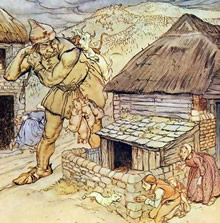
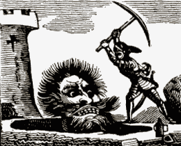

Cormoran, the Giant of St. Michael's Mount
Cormoran was the name given to the giant who is said to have built and lived on St Michael's Mount, he was killed by Jack the giant slayer.
St Michael's mount used to be known as 'The White Rock in the Wood', it was believed that in ancient times the rock stood about six miles from the sea and was surrounded by woodland (this may have relevance to the Lyonnesse legend). A giant called Cormoran lived in the area and decided to build a fortified home for himself, and to raise it above the height of the surrounding trees so that he could see for miles around.
He was meticulous in his task and selected only the finest white granite from the local area. These he piled high in a huge mound. He was helped in this work by his wife Cormelian, she was not as engaged in the toil as her husband and wondered why he was using white granite when there was an abundance of greenstone in the area. When Cormoran was sleeping she picked up a huge boulder of greenstone and put it in her apron to carry, hoping to hide it in the foundations.
Cormoran awoke as she was passing by, enraged at what she was doing he leapt up and kicked her firmly in the backside, sending her flying through the air. The greenstone dislodged from her apron and buried itself deep into the sand, so that it could not be moved. The stone became Cormoran's grave and is now known as Chapel Rock.
In another story the giant of the mount although not named as Cormoran, kills his wife accidentally by throwing his hammer at her.
How Cormoran was slain
From the protected base of St Michael's Mount Cormoran terrorised the surrounding countryside, stealing cattle and carrying them away on his back or in his belt for a giant sized supper.
The people became so tired of the giant that they offered an award to slay the giant. This challenge was taken up by a farmers son called Jack who lived close to Land's End.
Jack used cunning to get the giant in a vulnerable position.
He dug a huge pit outside Morvah and covered it over with saplings and straw. When the pit was suitably camouflaged Jack drew the giant out of the Mount by blowing his horn.
The enraged Cormoran rushed down from the Mount and before he could reach Jack fell into the disguised pit. Jack then struck the giant with a mortal blow with his pick and filled the pit with earth.
The people of Cornwall where delighted and as a gift to his bravery he was presented with a sword engraved with his name. Jack became known as Jack the giant killer, a name of legends.